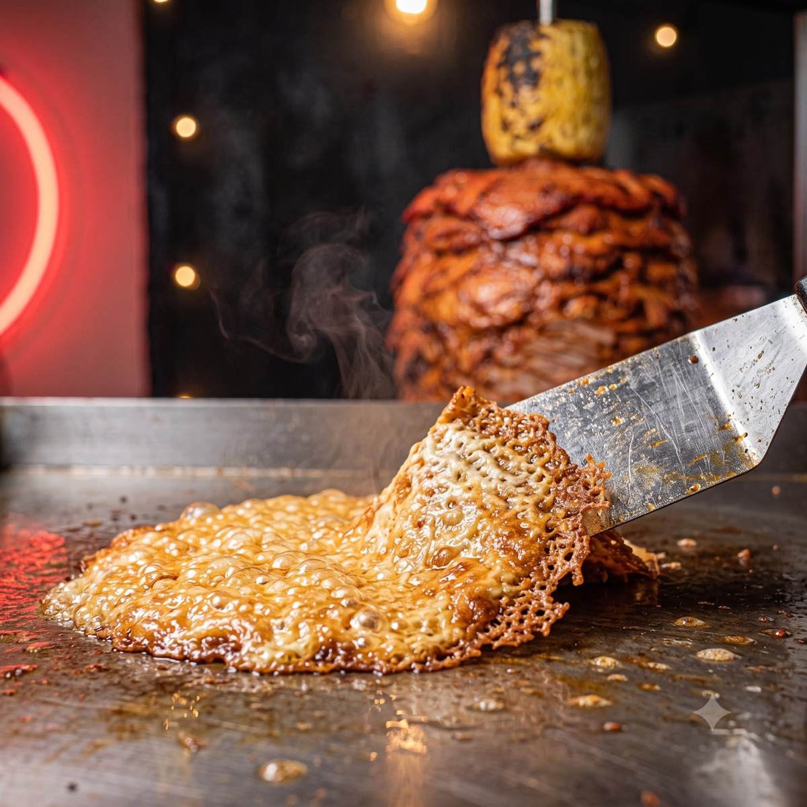
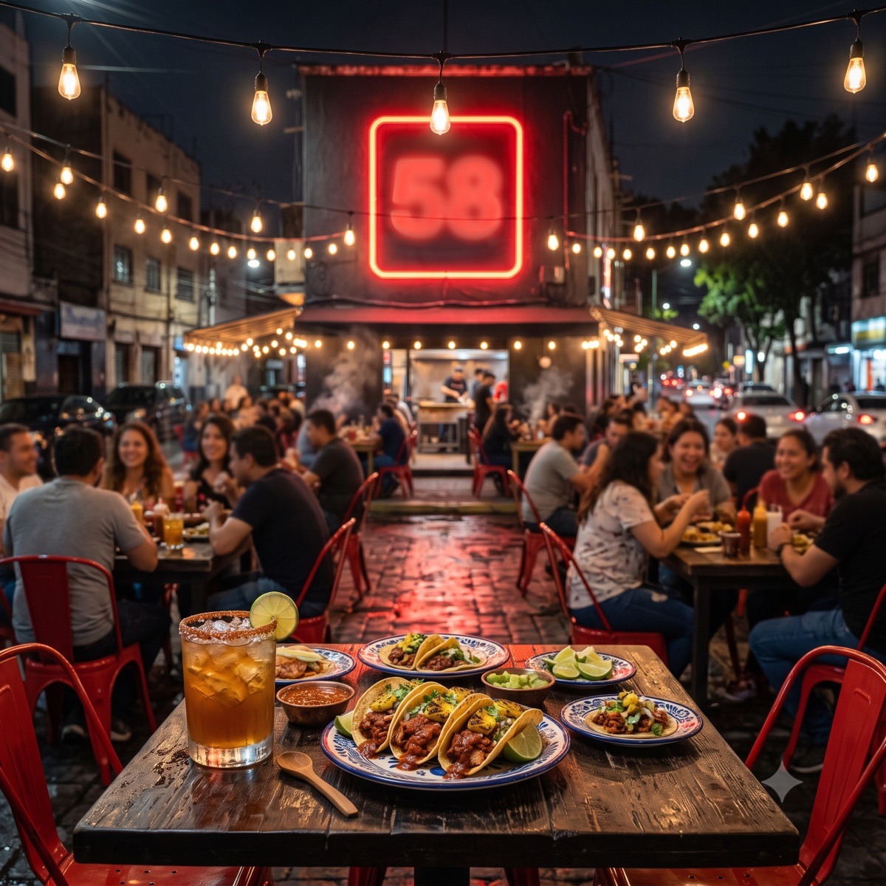

SET 002 — Producto (canon de menú y feed)

EL VELADOR · el taco de la casa

PASTOR · del trompo

ARRACHERA · la reina

BISTEC · de la plancha

LA GRINGA · estrella nueva

QUESADILLA · con queso

LA DIABLA · doble harina

ORDEN DE BISTEC · para compartir

AGUAS DEL DÍA · en vaso de metal

FRIJOLES CHARROS · caldosos
SET 003 — El local real

LA FACHADA FRONTAL · bucareli 290 con el 58 encendido

EL COMEDOR · sillas rojas y salsas en mesa

LA COCINA · el trompo y el equipo
SET 001 — Ambiente (la noche)

EL TROMPO · el oficio

LA COSTRA · contenido del lunes

LA TERRAZA · la noche
GENERADAS CON GEMINI (NANO BANANA 2) · MASTERS 2048×2048 EN fotos/ y fotos/menu/ · OJO: MARCA DE AGUA ✦ EN ESQUINA — RECORTAR ANTES DE IMPRIMIR · AL ABRIR EL LOCAL SE REEMPLAZAN CON FOTOS REALES USANDO ESTE MISMO CANON.